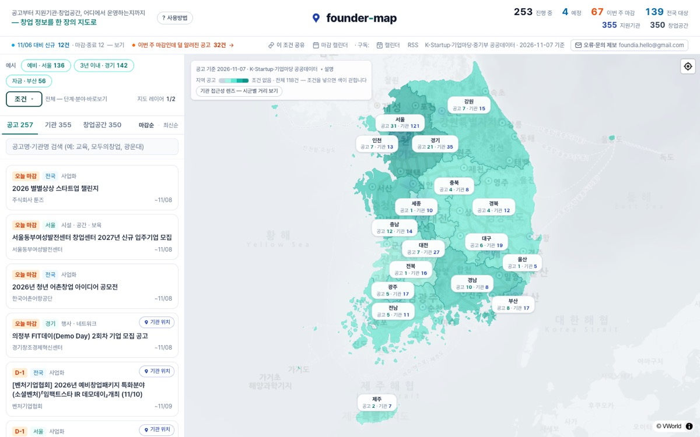

응답 52ms창업지원사업 지도
founder-map
지역·창업 단계·지원 분야를 고르면 지금 신청할 수 있거나 곧 열릴 창업지원사업만 지도에 남아요. 지원기관과 창업공간이 어디 있는지도 같은 지도에서 봐요.
- 11월 7일 수집 공고 258건
- K-Startup·기업마당 매일 수집
- 지원기관 355곳 · 창업공간 350곳
공고마다 데이터 기준일을 붙이고, 공개되지 않은 정보는 AI로 추측해 채우지 않아요. 기관 위치(핀)와 지원 대상 지역(면)은 다른 모양으로 그려 헷갈리지 않게 했어요.
Next.js 16 · TypeScript · MapLibre · Python 수집기
열어 보기(새 창)
소스 비공개